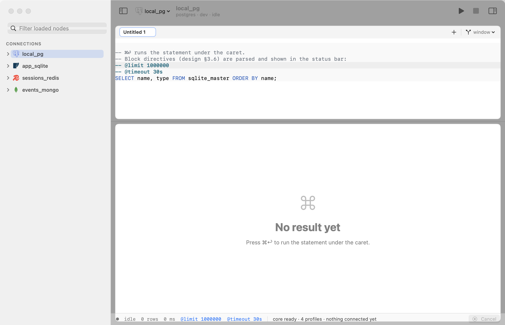
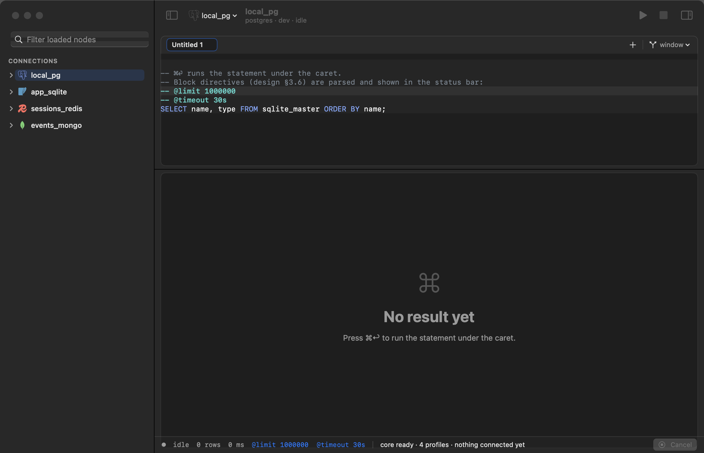

Every database in one native app. Free and open source.
Postgres, MySQL, SQLite, Redis and MongoDB — SQL and documents as equals, not one bolted onto the other. A native macOS app and a CLI, both over one Rust engine. No Electron, no JVM.
git clone https://github.com/chud-lori/datagrep.git
cd datagrep
cargo build --release # engine + CLI
cd ui/macos && ./build-app.sh # macOS app — no Xcode neededRust toolchain + macOS Command Line Tools are the only prerequisites.


Four engines in one sidebar. The screenshot follows this page’s theme — dark mode is a first-class citizen, not an afterthought.
Every number above was measured on 2026-08-08 with the release CLI against a live postgres:16
(1M-row × 24-column table). Method and full results:
notes/test-report.md.
No other benchmark claims are made on this page.
Why datagrep
Like DataGrip, but free and light
Most database clients make you choose: a heavyweight IDE, an Electron app, or one tool per engine. datagrep’s bet is different — one small native app where relational rows and documents are equals.
SQL and NoSQL as equals
PostgreSQL and MongoDB sit in the same sidebar with the same interaction model. Document databases aren’t bolted onto a SQL tool, and SQL isn’t bolted onto a document viewer.
Results stream, memory stays flat
The driver, a bounded channel, and the result store form a pipeline where nothing runs more than two chunks ahead. A million-row result never becomes a million resident rows.
Native macOS
SwiftUI + AppKit over a Rust engine. No Electron, no JVM. The CLI binary is 7.7 MB.
Cancel actually cancels
Measured at 3–8 ms from cancel to a usable connection, with no orphaned server-side queries — verified in pg_stat_activity.
Three kinds of blank
NULL, the empty string, and a field that is absent from a document are three different facts — and render as three visibly different things. See below.
Free and open source
No tiers, no licence server, no account. It works offline, and the source is on GitHub.
Schema, not just names
Click a table and the detail pane shows its columns with types, nullability and primary keys, its indexes, and row / size estimates. For MongoDB the fields are inferred from a sample — and the pane says so, because a field missing from the sample may still exist in the collection.
Read-only that admits its limits
Mark a connection read-only and the badge says exactly how real that promise is: enforced by the server only when the engine itself refuses writes, blocked by datagrep only when the guard is our client-side classifier. It never claims more protection than exists.
Query history, in both frontends
⌘Y opens every query you’ve run, searchable, in the app — the same history the CLI’s history command reads.
A trust surface, not cosmetics
NULL is not "" is not absent
In a document store a field can be missing entirely — a third fact, distinct from
NULL and from an empty string. Most clients collapse all three into one blank cell;
our competitor study
found none that cleanly distinguishes all three, and several with shipped bugs here — an invisible
NULL label in dark mode, NULL exported as the literal string "null".
datagrep renders each one distinctly, in the grid and in the CLI.
| id | name | note | what the cell means |
|---|---|---|---|
| 1 | alice | NULL | The value is NULL — explicitly unknown. |
| 2 | bob | "" | The value is an empty string — known, and empty. |
| 3 | carol | likes SQL | An ordinary value. |
| 4 | dave | absent | The document has no note field at all. |
The honest comparison
How it stacks up
Every claim about a competitor below traces to a cited source in our UX reference study — GitHub issues, official docs, or the vendor’s own pages. Where the study found nothing, the cell says so. And where a competitor is ahead of us, the table says that too.
| Tool | Price & licence | Runtime | SQL + NoSQL | Large results | NULL vs "" vs absent | Inline editing / autocomplete |
|---|---|---|---|---|---|---|
| datagrep | Free, open source. No tiers, no account. | Native macOS + Rust engine | Both, as equals — Postgres, MySQL/MariaDB, SQLite, Redis, MongoDB, Elasticsearch | Streams end-to-end; 174 MB peak through a 1M-row result (measured) | Three visually distinct states | Neither yet — see Not yet |
| DataGrip | Free for non-commercial use (since Oct 2025); paid subscription (≈$99/yr) for commercial work | JVM (IntelliJ platform) | SQL-first, very broad engine list | 500-row pages; JetBrains publishes its own “high memory consumption” troubleshooting guide | Not verified either way in the study | Both — its autocomplete is best-in-class (completes entire JOINs) |
| DBeaver | Free Community edition; MongoDB/Redis and other NoSQL require paid editions | JVM (Eclipse platform) | SQL broad; NoSQL behind paid tiers | Paged; long-standing documented startup-time and memory-growth complaints | Shipped a bug rendering [NULL] for all string values (#8803) |
Both |
| TablePlus | Proprietary; free tier capped at 2 tabs, 2 windows, 2 filters | Native | SQL + some NoSQL | 300-row pages; documented lock-ups while autocomplete indexes 100+ schemas (#3649) | Not verified in the study | Both |
| Beekeeper Studio | Open-source core; paid edition for the full feature set | Electron | SQL + MongoDB | 20k-row on-screen cap; documented crash loading an 18k-table schema (#479) | Documented false-NULL display (#2652); exported NULL as the string "null" (#2863) |
Both |
| MongoDB Compass | Free; MongoDB only | Electron | MongoDB only — one more app to keep open | 25 documents per page; documented freezes on 30 MB+ collections | Credit where due: its Schema tab shows an explicit “% undefined” for sparse fields | Document editing |
| RedisInsight | Free; Redis only | Electron | Redis only — one more app to keep open | SCAN batches by design; maintainers decline “scan all” to avoid OOM (#526) — which validates datagrep’s prefix-scoped Redis browsing | — | Key editing |
To be plain about where datagrep is behind: every tool in this table has inline cell editing today, and most have autocomplete — datagrep has neither yet. If you edit rows in a grid all day, those tools currently serve you better. What datagrep already does better is the part they routinely get wrong at scale: streaming large results with flat memory, staying responsive against huge schemas, and telling you the truth about blank cells.
Engines
What connects today
One driver crate per engine, behind a capability-based API — no engine ever gets special-cased above the driver seam.
| Engine | Status |
|---|---|
| PostgreSQL | working |
| SQLite | working |
| Redis | working |
| MongoDB | working |
| MySQL / MariaDB | working |
| Elasticsearch | working read-only — no writes yet |
The app is macOS-only today, and it reaches all six engines. The CLI currently registers PostgreSQL and SQLite only — Redis, MongoDB, MySQL / MariaDB and Elasticsearch surface through the app.
Install
Download, or build from source
Each release ships
datagrep-macos.dmg — open it and drag datagrep.app onto the Applications shortcut.
The installer script does the same thing, and also installs the CLI:
curl -fsSL https://raw.githubusercontent.com/chud-lori/datagrep/main/install.sh | bash
# → the CLI; add `-s -- --app` to install the app tooThe app checks for a newer release once per launch and only tells you about it — it never downloads or installs anything behind your back, and you can turn the check off.
First launch from the DMG shows a warning. datagrep is not notarized — there is no Apple Developer account behind it — so macOS says it “could not verify datagrep is free of malware”, and on recent versions the only obvious button is Move to Bin. The app is fine; macOS simply cannot attribute it to a registered developer. Open it once via System Settings → Privacy & Security → Open Anyway, or clear the download flag yourself:
xattr -dr com.apple.quarantine /Applications/datagrep.appCtrl-click → Open also worked on older macOS, but no longer does on macOS 15. Installing with the script avoids all of this, because a file that was never downloaded by a browser is never quarantined.
Build from source
Two commands, two artifacts. The macOS app needs no Xcode — the Command Line Tools are enough,
because it builds with Swift Package Manager rather than xcodebuild.
1. Engine + CLI
cargo build --release
# → target/release/datagrep2. The macOS app
cd ui/macos && ./build-app.sh
# → ui/macos/datagrep.app
Prerequisites: a Rust toolchain (see rust-toolchain.toml) and the macOS Command Line Tools
(xcode-select --install). cargo test --workspace runs everything that needs no live server.
The CLI
The same engine, in your terminal
Connections are named profiles. A password in a connection URL is moved to the OS keychain on import — profiles store only a reference to it, never the secret.
$ datagrep profiles add local "sqlite:///tmp/app.db"
created profile `local` (sqlite)
$ datagrep query --profile local -c "SELECT id, name, note FROM users ORDER BY id"
id | name | note
----+-------+----------
1 | alice | NULL
2 | bob |
3 | carol | likes SQL
(3 rows)
$ datagrep export --profile local -c "SELECT * FROM events" --format csv -o events.csv
$ datagrep query --profile prod -f report.sql --format json | jq '.[].email'NULL (row 1) renders differently from an empty string (row 2) — the same three-way distinction the app’s grid makes.
- query
- run SQL (or a Mongo/Redis command) and stream results in
table,csv,json,ndjsonformats - export
- write a full result set to a file
- profiles
- add, list, show, import/export named connections
- catalog
- browse databases, schemas, and tables
- history
- list past queries, with full-text search
- doctor
- check connectivity and configuration
Block directives
Any statement can carry per-block settings as plain comments — they travel with the query text, so they survive copy-paste and version control. The status bar shows what’s in effect.
-- @limit 200 cap the rows this block returns
-- @timeout 30s give up after 30 seconds
-- @connection staging run against another profile
-- @readonly refuse writes, checked client-side
SELECT * FROM events;In the app, ⌘↵ runs the statement under the caret — never the whole buffer by accident.
Under the hood
How it stays small
The goal, in one line: the client you don’t have to close to get your laptop back. Three design decisions get it there.
Results stream. The driver, a bounded channel, and the result store form a pipeline in which nothing runs more than two chunks ahead. When the UI stops consuming — you stop scrolling — the driver stops reading its socket, the TCP window closes, and the server stops producing. Backpressure reaches all the way to the database, end to end. That is why memory stays flat at 174 MB through a million-row result: the rows you aren’t looking at simply never exist on your machine. A row-number gutter keeps your place in the stream, and when a result stops at the 500,000-row cap the grid says so in words — “stopped at the 500,000-row limit — result incomplete” — rather than showing a count that looks final.
Schema browsing is lazy. Expanding a tree level costs one cheap query for that level — connecting never crawls the catalog. That is the whole trick behind connecting to a 100,000-relation schema in 7–29 ms, and it deliberately avoids the failure mode our competitor study documents in other tools: eager, blocking, whole-catalog work that locks up the app at real-world scale.
The budget is enforced, not aspirational. Startup time, idle memory, first-row latency, and binary size have machine-readable targets in budget.toml, checked by ci/gates.sh. If a change makes the client heavy, CI goes red.
Security
What’s defended — and what isn’t
A database client holds live credentials, opens connections to production systems, and renders whatever those systems send back. So datagrep has a written threat model that treats three inputs as attacker-controlled — the server, the connection URL, and an imported profile bundle. The claims below are the checkable kind: each one points at the code or policy file that makes it true.
Secrets live in the OS keychain
A password never lands in the profile store — the profile keeps only a keychain:
reference, and the exported profile format has no field capable of holding a secret, so exports
are safe to commit structurally, not by a filter someone has to remember to run.
DataGrip gets this right too; DBeaver’s default credentials file misses the bar — it is
encrypted with a static, publicly known key
(dbeaver#6991).
The supply chain is gated, not trusted
cargo audit and cargo deny run on every pull request, and weekly
against the unchanged tree — so an advisory filed against a lockfile nobody touched still goes
red on Monday morning. Advisories fail the build whether or not a fix exists, licences are
policed, and native-tls / openssl are banned by name so a
second TLS stack cannot arrive as someone’s transitive default. The policy is a readable file:
deny.toml.
Hostile input is assumed, and tested
Every FFI entry point wraps its body in
catch_unwind
— a Rust panic unwinding across the C ABI is undefined behaviour, so that wrapper is
load-bearing, not defensive style — and every entry point has hostile-input tests. The driver
panics found reachable from a malicious connection URL or server response were fixed, with
tests pinning each one. The protocol decoders are not fuzzed yet, and SECURITY.md says so
rather than rounding up.
Tunnels that fail closed
SSH tunnels run in-process, with no listening port on your machine. Host keys are pinned on first use, and the trust prompt is built so a dropped or unanswered prompt counts as reject — never silent acceptance. And the read-only badge above already told you the same kind of truth: it reports whether the server enforces the promise, or only datagrep does.
The gaps, stated plainly
- PostgreSQL and MySQL connections are not encrypted. The Postgres driver
implements no TLS, and the MySQL driver compiles it out. Both fail loudly — an
sslmode=requireURL is rejected, never silently downgraded to plaintext — but the consequence stands: across an untrusted network, use the built-in SSH tunnel. That is the supported answer until the drivers grow TLS. - A profile bundle is executable. A profile’s secret can be an
exec:command, and import does not gate that yet. Treat a bundle you did not write exactly as you would treat a shell script from the same source: read it before importing it. - No external audit, one maintainer, ad-hoc code signing. datagrep is pre-1.0 and not notarized — this page says so rather than implying otherwise.
The full threat model, what “out of scope” means here, and the coordinated-disclosure process are in SECURITY.md. Found something? Use private vulnerability reporting — a human reads it within three business days.
The honest part
What’s not built yet
You’ll find these gaps eventually; better you hear them here first. If one of them is your daily driver requirement, datagrep isn’t your tool yet.
- No inline cell editing. Every competitor in the table above has it. The plan is a staged-edit, review-before-commit model — because a naive implementation can update the wrong row, and that’s worse than not shipping it.
- No autocomplete. Planned as a restrained, lazily indexed version — our study found a bad autocomplete generates more anger than none.
- Elasticsearch is read-only — browsing and querying work, writes are not implemented.
- App-side gaps: no export UI (the CLI has
export), no foreign-key click-through, no ER diagrams. - macOS only. No Linux or Windows app today.
Something else missing, or broken? File an issue — engineering notes, test reports, and the full competitor study live in notes/.